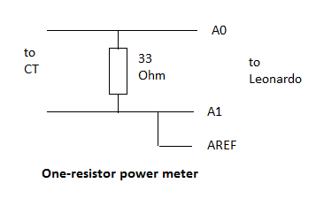

Several people have pointed out that the Leonardo board has better analogue design than other Arduino boards but another advantage of this board is that it uses the ATMega32U4 chip. One advantage of this chip is that it has built-in USB capability, so there is no need for the FTDI adaptor, but it also has a much more flexible analogue-to-digital converter than the one used in the ATMega328.
The main improvements to the ADC are:
1. differential input capability
2. programmable gain
3. 2.56V internal reference
4. high speed mode
5. more inputs
The big advantage of 1 is that it does away with the need for DC offset removal since the ADC directly outputs positive and negative values. It also means that the input bias circuitry is far less important since all it needs to do is ensure that the ADC inputs stay within the 0-Vcc range. There is no problem with sharing a simple resistive divider between all inputs. In differential mode the ADC input range is –AREF to +AREF.
The gain options are x1, x10, x40 and x200. This means that if x1 is chosen to measure the normal maximum current of 100A, then the other ranges provide maximum values of 10A, 2.5A and 0.5A respectively.
The advantage of 3 is that it does away with the need to use AVCC for the voltage reference and therefore the need to measure VCC when running on batteries. Using this reference in differential mode means that the peak-to-peak input voltage can theoretically be up to 5.12V regardless to the VCC supply voltage, although the inputs still have to remain within the 0-Vcc range.
4 allows the ADC clock to run at 250kHz without any loss of resolution (but with a slight increase in power consumption). This is significant because differential mode is slower than single-ended mode due to the need to allow time for the internal amplifier to settle after changing the input selection. With careful design it is still possible to measure voltage and current at 50 times per mains cycle though.
Apart from this reduction in speed, the other disadvantage of differential mode is some loss of resolution but that has to be considered in context. For example, at 200x gain the claimed resolution is 7 bits but this still represents significantly better voltage resolution than the current emon design. With AREF at 5V and 10-bit ADC resolution, each ADC step of the current design is 4.88mV. With the same AREF in differential mode with x200 gain and an effective resolution of 7 bits each ADC step is 195µV, or a 25x improvement in sensitivity.
I have created a modified version of EmonLib, called EmonLibDiff which makes use of the ATMega32U4 differential modes. The voltage function is the same but the pin options are only 0-3 and 5 as A4 is used as the negative input to the differential amplifier. The value for PHASECAL will also be slightly different due to timing changes. The current function has an additional gain parameter which may be 1,10,40 or 200 and here the pin options are restricted to 0-3. This library will only work with the ATMega32U4 chip.
Apart from the need to add an analogReadDiff() function, the library is simpler than the standard one due to the removal of the high pass filters.
I have modified the library current only and voltage+current examples to work with the differential library, and I have also included an example of auto-ranging current only measurement.
Using this library it is possible to build a current-only power meter using only a Leonardo board, a CT and a single resistor as shown here..

By connecting the negative amplifier input to the 2.56V of AREF we can keep the input roughly centred without using any components. It’s also possible to build a current and voltage version using just 3 resistors.
Re: Advantages of using the ATMega32U4 (Leonardo) chip for power measurement
Without using any of the new features, were you able to get a feel for whether or not the LC decoupling on AVCC made much difference to the noise levels?
Re: Advantages of using the ATMega32U4 (Leonardo) chip for power measurement
I didn't try the Leonardo in single-ended mode but my guess is that it won't make much difference. I did try adding an inductor in series with the AVCC feed on a shop board and I couldn't detect any improvement.
You are always going to get some toggling of the LSB and for a standard emonTx the LSB permanently on would look like 86W so it doesn't take that many toggles to get the few Watts that you normally see.
Re: Advantages of using the ATMega32U4 (Leonardo) chip for power measurement
By connecting the negative amplifier input to the 2.56V of AREF we can keep the input roughly centred without using any components.
Are you sure that's allowed? I think they run the internally selected Vref out to AREF so you can stick a capacitor on it for decoupling, but generally it's a very high impedance source, so I don't think you can load it up with anything.
Re: Advantages of using the ATMega32U4 (Leonardo) chip for power measurement
That is interesting, with the YHDC 30 A c.t. that has internal burden resistor, it would mean current measurement with no external components at all :)
I am subscribing to the topic
Re: Advantages of using the ATMega32U4 (Leonardo) chip for power measurement
dBC: Are you sure that's allowed? I think they run the internally selected Vref out to AREF so you can stick a capacitor on it for decoupling, but generally it's a very high impedance source, so I don't think you can load it up with anything.
It's not ideal, due to the risk of adding noise to AREF, but there is no load since the CT is isolated and therefore floating wrt AREF so you only have the tiny input current of the analogue inputs. I've tried this with both current only and current+voltage and it seems to work fine, only showing about 1.5W of noise in x200 mode.
mharizanov: That is interesting, with the YHDC 30 A c.t. that has internal burden resistor, it would mean current measurement with no external components at all :)
Even better - I like your thinking :)
It would be interesting to repeat the accuracy tests with this CPU since using auto-ranging it can accurately measure down to a few Watts and all the way up to 25kW.
Re: Advantages of using the ATMega32U4 (Leonardo) chip for power measurement
so you only have the tiny input current of the analogue inputs.
Wouldn't they be high enough to potentially drag down AREF, right when you want it at its most stable? For best results you tend to need to drive them from a fairly low impedance source (< 10K ohms from memory).
And I know the 2560 datasheet says if you want to measure the bandgap voltage at AREF use a high impedance voltmeter.
Re: Advantages of using the ATMega32U4 (Leonardo) chip for power measurement
We are driving the inputs with a low impedance, 33 Ohm, but this is irrelevant anyway as the 10k recommendation only applies to single-ended inputs, when the pin is driving the sample and hold directly. In differential mode the internal amplifier is driving the sample and hold so the external driving impedance can be much higher.
The impedance seen by AREF is much higher too, just the analogue inputs to the internal amplifier, and I'm sure these qualify as "a high impedance voltmeter".
This is a very minor issue anyway. The reason for this thread was to promote discussion of the merits of having an ADC with differential inputs and gain. The suggestion of using AREF to bias the inputs was just to say it was possible and it works. It's just as easy to bias all the inputs with a single pair of resistors.
Re: Advantages of using the ATMega32U4 (Leonardo) chip for power measurement
In differential mode the internal amplifier is driving the sample and hold so the external driving impedance can be much higher.
Yep, but still not that high, according to the datasheet:
If differential gain channels are used, the input circuitry looks somewhat different, although
source impedances of a few hundred kΩ or less is recommended.
The impedance seen by AREF is much higher too, just the analogue inputs to the internal amplifier, and I'm sure these qualify as "a high impedance voltmeter".
I would imagine that depends on their amplifier. I used to think the 8M input impedance on my voltmeter classified as a high impedance voltmeter, until I went to measure the output of a pH probe with it. You really need an op-amp with JFET-inputs to measure one of them. The datasheet quote above makes me think their op-amp inputs aren't hugely high impedance. And that they specifically call out for a high impedance voltmeter to be used when measuring AREF makes me think it has very little ability to drive.
It's just as easy to bias all the inputs with a single pair of resistors.
Exactly. Personally, for the cost of 2 resistors I'd be staying well away from AREF. I think your design above is well outside the intended purpose of AREF, but your mileage may vary.
Re: Advantages of using the ATMega32U4 (Leonardo) chip for power measurement
Actually, the datasheet is pretty clear:
Note that Vref is a high impedant source, and only a capacitive load should be connected in a system.
My reading of that is that it's "for internal use only". They've run it out to a pin so you can decouple it for them, but putting any load on it could at the very least degrade the A/D performance, and worst case, potentially damage the device over time. Putting a high impedance voltmeter on it in the lab while debugging is a lot different from permanently wiring it into an op-amp input.
Re: Advantages of using the ATMega32U4 (Leonardo) chip for power measurement
They've run it out to a pin so you can decouple it for them because they can't fabricate an on-chip capacitor big enough,
FTFY.
I guess you'd be OK to bootstrap it though.
Re: Advantages of using the ATMega32U4 (Leonardo) chip for power measurement
I was hoping this thread would provoke a debate about the merits of using a chip that does away with the need for high-pass filters, measuring battery voltage and the FTDI adaptor and solves the issue of measuring a wide power range, rather than nitpicking about an idle comment at the end of the post!
Re: Advantages of using the ATMega32U4 (Leonardo) chip for power measurement
"... the merits of using a chip that does away with the need for high-pass filters, measuring battery voltage and the FTDI adaptor and solves the issue of measuring a wide power range."
I thought that was self-evident. But from the OEM Shop's point of view, I can see that developing a brand new design and getting the manufacturing process under way is not trivial, and let's not lose sight of the fact that for many people - even the minority (but growing minority, I suspect) who are keen to monitor energy usage, a good indication is often good enough. The various energy suppliers' schemes, devices that estimate energy purely from a measurement of current, etc are witness to that. The OEM / Arduino design is clearly better than much that is on offer, equally clearly improvement in the design and the choice of transducers is possible.
Glyn was working on an emonTx with switched gain current inputs (exactly like the Atmel prototype) but that seems to be on the back burner for now. Maybe that design should mutate and evolve and G&T (and you!) should be thinking in terms of an EmonTxPro, with improved performance, more accurate transducers and ready expansion to suit the North American mains supply?
Re: Advantages of using the ATMega32U4 (Leonardo) chip for power measurement
From what I remember of Glyn's design it used external amplifiers and analogue switches and was deemed too costly to build and consequently was shelved, as you say, in favour of a cheaper alternative. I don't know if Glyn was aware of the enhancements to the ADC in the ATMega32U4 chip but maybe he could have used that in his design instead and produced a cheaper, simpler solution with similar features. The whole point in suggesting the ATMega32U4 is that it is a minimal cost increase over the SMD version of the ATMega328 and probably a cost saving if you take into account the cost of the FTDI adaptor.
I searched this site and couldn't find any mention of the ADC enhancements so it was reasonable for me to assume that they weren't being considered for future designs and so it would be worthwhile discussing them.
Anyway, I've learned my lesson and will keep my ideas to myself in future.
Re: Advantages of using the ATMega32U4 (Leonardo) chip for power measurement
"Anyway, I've learned my lesson and will keep my ideas to myself in future." I don't see why you should be thinking that. I at least recognise that you've made significant contributions with the 3-phase monitor that I've pointed many people towards, and the interrupt-driven code, and I think a super-emonTx would certainly fill a niche amongst the members of the community who need something better than the standard version, especially at low powers where noise and resolution are significant problems. Without knowing too many details, I see no reason why it could not replace the emonTx V2, even though the V3 goes some way towards alleviating this by having a 4th low-current input. All I was saying is the V2 has got lots of momentum behind it.
Re: Advantages of using the ATMega32U4 (Leonardo) chip for power measurement
Anyway, I've learned my lesson and will keep my ideas to myself in future.
But then you wouldn't have learned you're not allowed to hang stuff off AREF ;-).
But seriously, there are lots of different designs floating around in here. Some use AVRs, some use PICs, some use various versions of the s/w published here, while some of us use dedicated front-end energy metering ICs. The more we all share our experiences, the better everyone's design becomes.
I've just been playing around with "AVR121: Enhancing ADC resolution by oversampling" with stunning results. I've now got my 2560 ADC effectively giving me 14-bit conversions. The ADC in the 2560 seems similar to the one in your Leonardo, but with less gain options. It helps that I only use it to measure very slow moving values (rainwater tank levels), and I've got all the time in the world to oversample because all the time-sensitive stuff is done in dedicated ICs.
Re: Advantages of using the ATMega32U4 (Leonardo) chip for power measurement
But then you wouldn't have learned you're not allowed to hang stuff off AREF ;-).
Yeah, right, I can read you know! When interpreting data sheets, or any other set of rules for that matter, you need to understand the reason behind the requirement to see if it's applicable to your particular case. Here we're dealing with a high impedance signal that Atmel don't want you to put any significant load onto and probably don't want to have to constrain any future designs to a particular impedance, so they don't specify one. Clearly there is an acceptable load impedance which will not disturb the reference though
Just for you I tried measuring a 1.5V battery against the 2.56V reference while adding and removing the connection to A1 It made no difference to the ADC value and nor did measuring the reference with my Fluke multimeter, so the impedance can't be that high.
But seriously, there are lots of different designs floating around in here. Some use AVRs, some use PICs, some use various versions of the s/w published here, while some of us use dedicated front-end energy metering ICs. The more we all share our experiences, the better everyone's design becomes.
Yes I agree, but most people who have posted details of anything novel have drifted away either because there were no responses to their thread or due to derogatory comments from the keyboard warriors.
I've just been playing around with "AVR121: Enhancing ADC resolution by oversampling" with stunning results. I've now got my 2560 ADC effectively giving me 14-bit conversions. The ADC in the 2560 seems similar to the one in your Leonardo, but with less gain options. It helps that I only use it to measure very slow moving values (rainwater tank levels), and I've got all the time in the world to oversample because all the time-sensitive stuff is done in dedicated ICs.
Yes, I looked at that too but, as you say, only useful for slowly varying signals.
Robert - my comment wasn't in direct response to your post. You've been incredibly helpful to me, and almost everyone else on here, and I've learned a lot from you, for which I'm very grateful. I think it's just finally dawned on me that this site is really just supporting the shop products and there's next to no real interest in pushing the boundaries, which is where my interest lies.
Re: Advantages of using the ATMega32U4 (Leonardo) chip for power measurement
Please don't stop trying to push the boundaries.
Although I'm only a beginner to electronics and energy monitory, my expectations lie beyond the boundaries (you could say I'm slightly OCD) and any attempt to further accuracy, simplicity or performance of energy monitoring is highly appreciated.
I'm sure there are many other like me who also share their appreciation. Challenging accepted ideas always draws opposition, but it's also one of the best ways of making significant progress.
Thank you for your contributions Martin, and please don't be discouraged or offended. I'm sure most people are just playing devils' advocate and wanting you to prove them wrong.
Regards,
Michal
Re: Advantages of using the ATMega32U4 (Leonardo) chip for power measurement
Clearly there is an acceptable load impedance which will not disturb the reference though
Sure, but as you say it's undocumented. And the input impedance of the op-amp is barely documented. There's also the risk of introducing noise as you conceded above. Your experiments suggest neither issue is a big problem in this case, but designs based on empirical "I tried it and it works fine" often turn out to be less robust in all the varying real-world environments they're likely to end up in. Sticking to the datasheet rules even when you understand the reason behind them, is best practice, particularly so in this case when the win (2 less resistors) seemed so trivial compared to the potential risks.
Re: Advantages of using the ATMega32U4 (Leonardo) chip for power measurement
Thanks, Michal that was a thoughtful and well-worded post, much appreciated.
dBC: You are in danger of becoming a keyboard warrior yourself with your patronising tone and constant desire to argue about a trivial side issue. I'll let you have the last word if that makes you happy but I'll leave you with this old cartoon since you reminded me of it....
Re: Advantages of using the ATMega32U4 (Leonardo) chip for power measurement
Thank you for that vote of thanks! "I think it's just finally dawned on me that this site is really just supporting the shop products and there's next to no real interest in pushing the boundaries..." I think I understand why you think that, but isn't Robin's Mk2 a most notable exception? (OK, it can be made with an emonTx, but the original was an Arduino.) I remain unconvinced that a schematic, parts list and maybe a pcb for the super-emonTx written up in the same format would receive no attention, especially as it would be almost automatically directly plug-in compatible with everything downstream (RPi, emonCMS), and it shouldn't involve much learning for anyone who wanted to use it or modify the code.
I think what you're looking at is a matter of fear of the unknown and confidence. Anyone coming to this site will see the shop kit products and in most cases evaluate them as a proven, easy to build system that will work. Irrespective of facts, they perceive a design by an individual in a post as carrying some risk, possibly requiring knowledge and expertise they don't have and requiring effort to source all the parts, and it is that which you need to overcome, and where a full write-up will help. I'm happy to edit and nit-pick to present it in the best light if you want.
[Edit]
dBC posted while I was writing that. Though I'm generally with him on following data-sheet practice, one notable exception springs to mind. I understand that the very first Sinclair calculator (anyone remember that) used and exploited a function in the chip that his designers had discovered and the chip designers/manufacturer knew nothing about! (I forget the details, but I think I've got one in a box somewhere if anyone wants to play.)
So pushing the boundaries can work to your advantage in a spectacular manner.
Re: Advantages of using the ATMega32U4 (Leonardo) chip for power measurement
You are in danger of becoming a keyboard warrior yourself
I'm sorry you feel that way.
constant desire to argue about a trivial side issue.
My only concern was that it was going to catch on as a good idea as indicated below:
mharizanov: That is interesting, with the YHDC 30 A c.t. that has internal burden resistor, it would mean current measurement with no external components at all :)
MartinR: Even better - I like your thinking :)
Re: Advantages of using the ATMega32U4 (Leonardo) chip for power measurement
Come on chaps. Bury the hatchet and preferably not in each other's skulls. If it's been shown that in the circumstances it's not an issue, isn't that what matters? I'm quite prepared to bet that Atmel want to keep their options open to change the design internally that might result in a lower output capability, and that's their reason for specifying 'capacitor only'. Or maybe they're worried about squirting noise in?
If you want to accept the risk that at some time in the future it will fail to work, or degrade performance unacceptably, or maybe reduce the life of the chip, then that's a valid engineering compromise decision that needs to be made; and if you do go ahead and use it, then (if it's a published design) you need to warn people or make periodic checks and change the design if it becomes an issue. And if it's just for yourself, you live with it until it dies.
Re: Advantages of using the ATMega32U4 (Leonardo) chip for power measurement
Perhaps the solution here shouldn't become the defacto product, but what are we really risking here? Potentially less than 10 dollars? It just so happens I have a couple of Teensy 2.0's that would be ideally suited.
If you want to add resistors or capacitors then that's fine too. To each his own.
Re: Advantages of using the ATMega32U4 (Leonardo) chip for power measurement
Fair points. When I'm at 38,000' in an A380 I hope the engineers didn't take any liberties with the datasheets, but to apply the same standards to the home hobbyist market is pretty silly. The "risks" I've been banging on about are pretty trivial, thanks for the perspective Robert and Michal.
Apologies MartinR. I fear I crossed the line from design reviewer to evangelical preacher. You've clearly made an informed design decision, and that should have been the end of it.